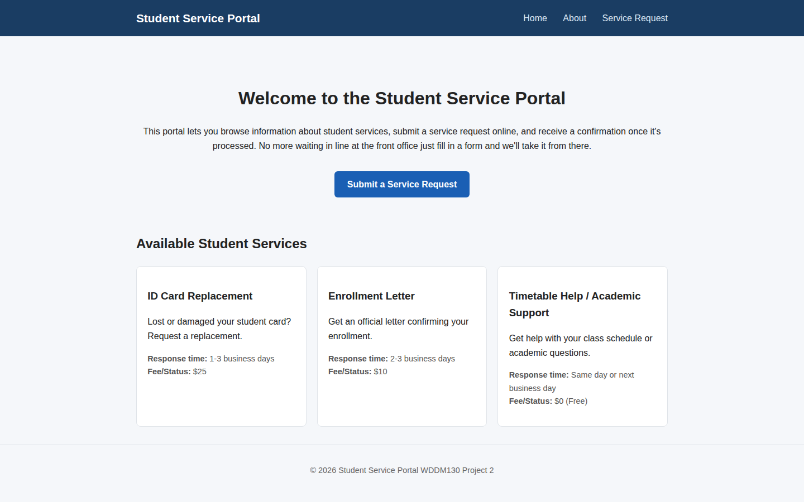
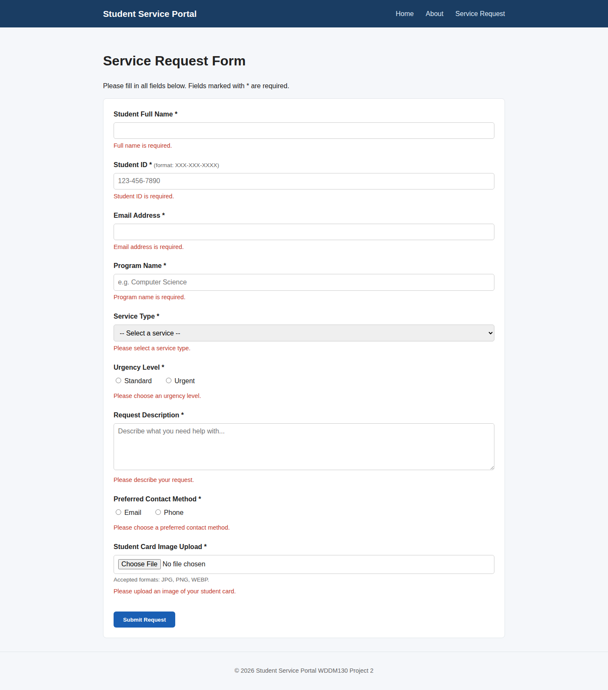
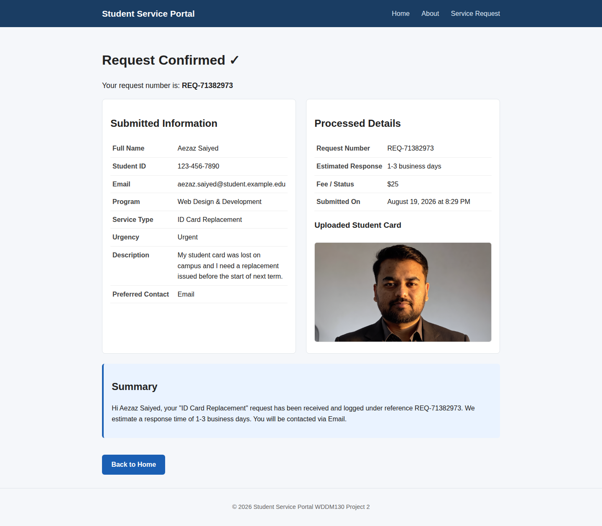

Multi-page structure
Home, About, Service Request, and a Confirmation page, all sharing one header/footer layout through EJS partials.
Full-Stack Case Study · Student Service Portal
A multi-page Node.js and Express application that lets students browse campus services, submit a request, and receive an instantly processed confirmation — no database, no client-side framework, just clean server-side logic doing real work.

01 · Overview
The brief for WDDM130 Project 2 was to build a multi-page, server-rendered application with dynamic content, a working form, real validation, and a file upload — without reaching for a database. The result was the Student Service Portal: a small campus tool where students browse available services, submit a request, and get a genuinely processed confirmation back.
Every page is rendered by Express and EJS on the server. There's no client-side framework doing the heavy lifting — the interesting problems here were all about handling input, state, and files correctly on the backend, then presenting the result clearly.
"Validation should feel like a checkpoint, not a wall — every failed field is a chance to guide the student back, not just an error to log."
02 · Requirements
Four requirements shaped every decision in the build: real page structure, dynamic content, a genuinely validated form, and a file upload that had to survive a serverless host.
Home, About, Service Request, and a Confirmation page, all sharing one header/footer layout through EJS partials.
The three services and their fees and response times live in one array and are looped into both the home page and the request form.
Nine fields validated server-side with express-validator, including a custom regex for the student ID format.
A required student card image, checked by MIME type and shown back to the student without ever touching disk.
03 · Problem
Without persistent storage, every submission still had to look and feel processed — a request number, a matched service, an estimated response time — all generated fresh on each request, then handed straight back to the student with nothing saved.
Request numbers, fees, and summaries all had to be derived at request time instead of looked up from a record.
Vercel doesn't guarantee persistent disk between requests, so a saved-file-plus-link approach wasn't an option.
Failing a nine-field form shouldn't mean the student has to retype everything from a blank page.
04 · Build Process
Mapped the four routes and what data each page needed before writing a single template.
Built EJS partials for the header and footer, then home, about, request, result, and 404 templates on top.
Express routes, an express-validator rule chain per field, and the POST handler's processing logic.
Configured express-fileupload, checked MIME types, and converted images to base64 data URIs in memory.
Configured vercel.json and shipped the app to Vercel as a serverless Node function.
05 · Route Map
06 · Build Principles
Trust nothing from the client — express-validator runs before any business logic touches the request.
Failed submissions re-render the form with oldInput, so nothing needs to be retyped from scratch.
Services, request numbers, and summaries are all derived fresh at request time, not stored anywhere.
Image data stays in memory and becomes a base64 data URI, so it survives on Vercel's stateless functions.
07 · Final Build
Three moments from the live app: browsing services on the home page, a form catching a missing field before it ever reaches the server logic, and a confirmation page built entirely from that request.


08 · Under the Hood
// must match XXX-XXX-XXXX, digits only body('studentId') .trim().notEmpty() .matches(/^\d{3}-\d{3}-\d{4}$/) .withMessage('Invalid format.');
09 · Outcome
10 · Reflection
Building without a database forced a different kind of discipline: every piece of "processed" data — the request number, the matched service, the summary message — had to be computed correctly in a single pass through the request handler. That constraint made the validation and processing logic in app.js the real heart of the project, not the templates.
The next step would be adding a lightweight persistence layer (something like a hosted Postgres or MongoDB instance) so requests could be looked up later, plus automated tests around the validation rules and an email confirmation step for a more complete service loop.